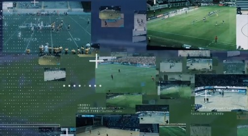

Pixellot : un outil de production vidéo automatique pour rencontres sportives

Les droits TV des compétitions sportives majeures se vendent à des prix exhorbitants, et les chaines de télévision les obtenant mettent en place des dispositifs massifs pour retransmettre ces compétitions. Cependant, les compétitions mineures ne disposent pas de tels moyens, et donc souvent elles ne sont pas filmées, et encore moins retransmises. Des dispositifs avec des caméras fixes existent, mais le rendu est de faible qualité, et donc peu regardé par les spectateurs. Pixellot a développé un dispositif qui permet de manière simple de filmer, produire et retransmettre des rencontres sportives, sans aucune action humaine et donc à moindre coût.
La technologie brevetée de Pixellot rationalise le flux de production en déployant un système multi-caméras sans personnel dans un seul appareil fixe (avec des angles supplémentaires si nécessaire), couvrant l'ensemble du champ et fournissant une image panoramique. Des algorithmes d'autoproduction avancés suivent le déroulement du jeu, identifient les points forts, créent des rediffusions et insèrent des publicités sans intervention humaine. Le système permet ensuite de diffuser ce contenu sur internet, sur mobile et permet donc aux fans mais aussi aux joueurs et coachs d’y accéder.